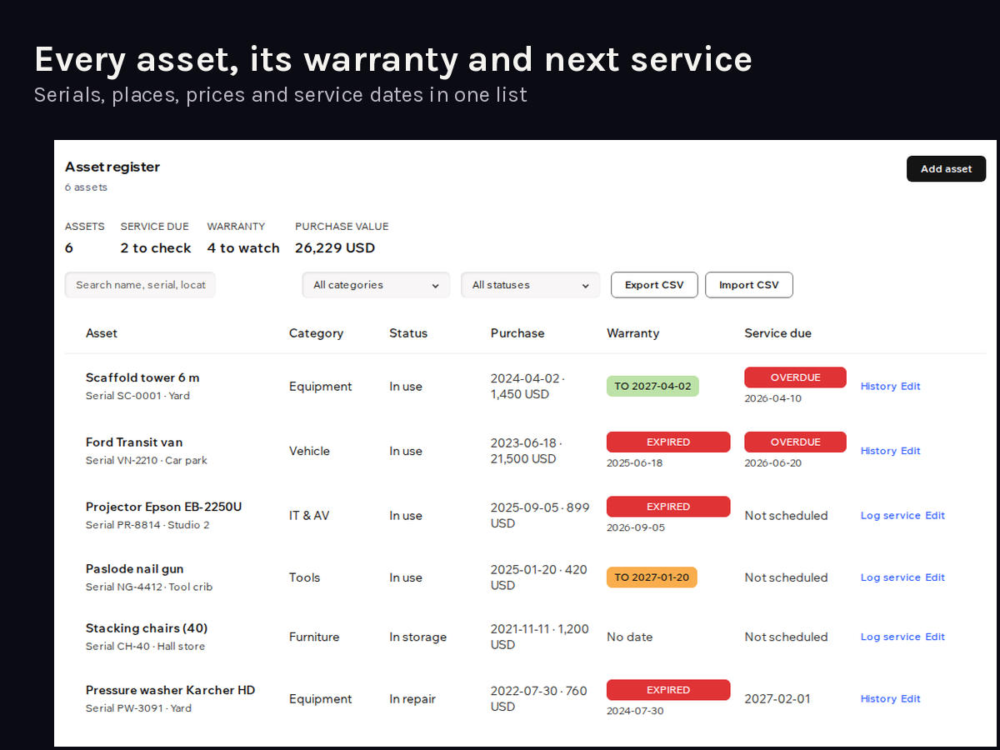

Equipment Log: Asset Register
Serial numbers, service history, warranty dates
- Serials, places, prices and warranty dates
- Service history with the next due date
- Overdue and due-soon flags at a glance
- Free for 10 assets and 5 service entries

What it does
Most businesses know roughly what equipment they own until they need a serial number, a purchase date or the last service. The details sit in a spreadsheet, a folder of invoices or someone's memory. This app keeps them in one list inside your site's dashboard.
Each asset is a row with its name, category, serial number, location and status, plus the purchase date, price, supplier and warranty end. Search by name, serial or location, and filter by category or status. A warranty badge shows at a glance which cover has ended, and a service due badge warns you before a renewal is missed.
Open an asset to see its full history. Every service, repair or inspection gets a dated entry with the cost, a note and the next due date, so the register answers when a machine was last checked and what it cost.
A new site can load six sample assets to see how the register works, then replace them with your own. The list exports to CSV, and a whole spreadsheet can be imported at once.
The free plan holds 10 assets and 5 service entries. Premium lifts both limits and adds CSV import and export. Premium is $5 a month, or $4 a month billed yearly ($48 a year), with a 14-day free trial.
Price
Free
- Up to 10 assets and 5 service entries
- Serial, location, purchase and warranty fields
- Service history with next due dates
Premium
$5/month, or $4/month billed yearly ($48/year), 14-day free trial
- Unlimited assets and service entries
- CSV import and export
- Everything in the free plan